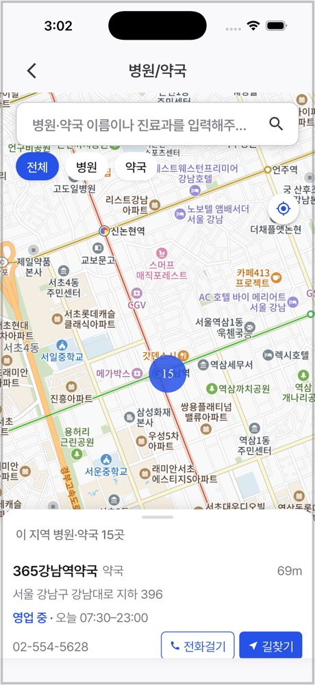
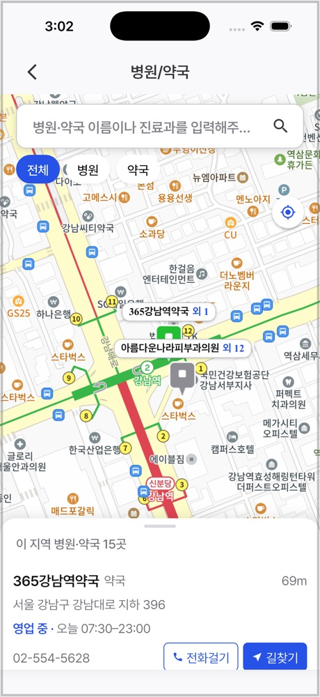
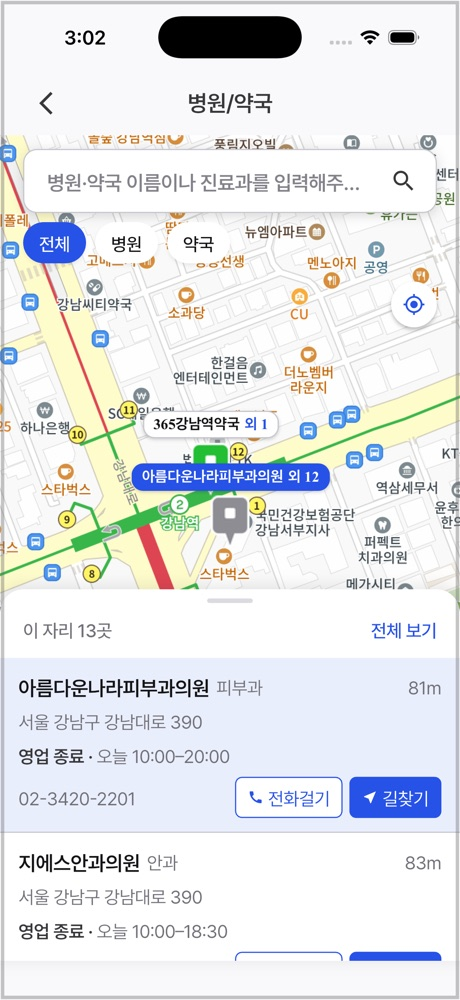
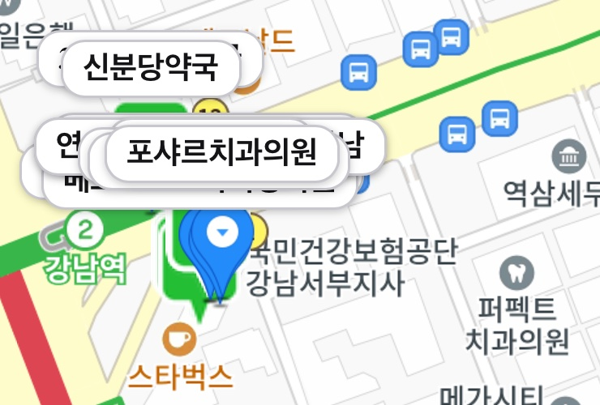
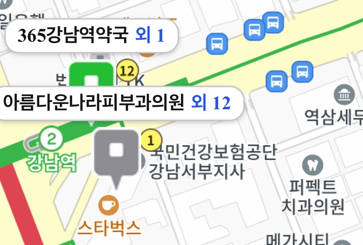

비서365 · 병원/약국 지도
홈 바로가기 한 번으로 내 주변 병원 · 약국 지도 진입. 핀 색으로 지금 영업 여부 확인, 의원이 몰린 건물은 핀 하나로 정리.



영업 상태
카카오 장소 검색에는 운영시간 정보 없음. 공공데이터포털 병·의원 · 약국 진료시간을 이름 · 좌표로 카카오 장소와 맞춰, 오늘 요일 진료시간을 목록과 핀에 연결.
겹침 정리
강남대로 390 한 건물에 의원 13곳. 장소마다 핀을 찍으면 핀과 이름표가 한 점에 쌓여 읽을 수 없던 문제 해결.
1px = 0.25m × 2배율−1 · 배율 3 기준 1px ≈ 1m, 20m 안쪽 합침


구현 메모
넓은 배율에서 지도를 3×3 칸으로 나눠 칸별 검색. 중심 가까운 곳만 받으면 핀이 가운데에만 몰리는 문제 해결.
병·의원 조회 1회 4~5초. 목록 먼저 표시 후 운영시간은 6건씩 나눠 받아 순차 반영. 받은 값은 앱 실행 중 캐시.
숫자 묶음 배율에서는 장소별 마커를 유지해 묶음 숫자와 「이 지역 15곳」 일치. 핀 합치기는 묶음이 풀린 배율에서만 적용.
웹뷰 지도는 테스트에서 실행 불가. 핀 합치기 · 이름표 겹침 계산을 순수 함수로 분리해 단위 테스트 43건으로 검증.